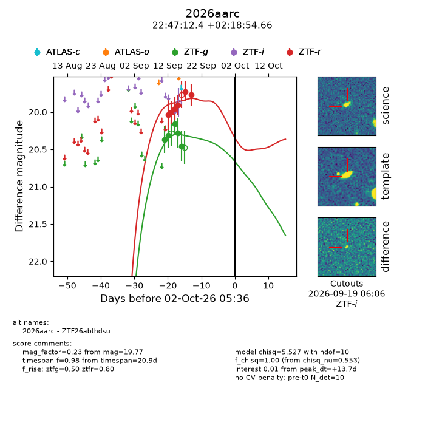
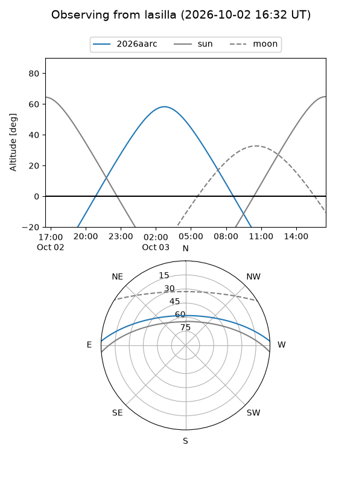
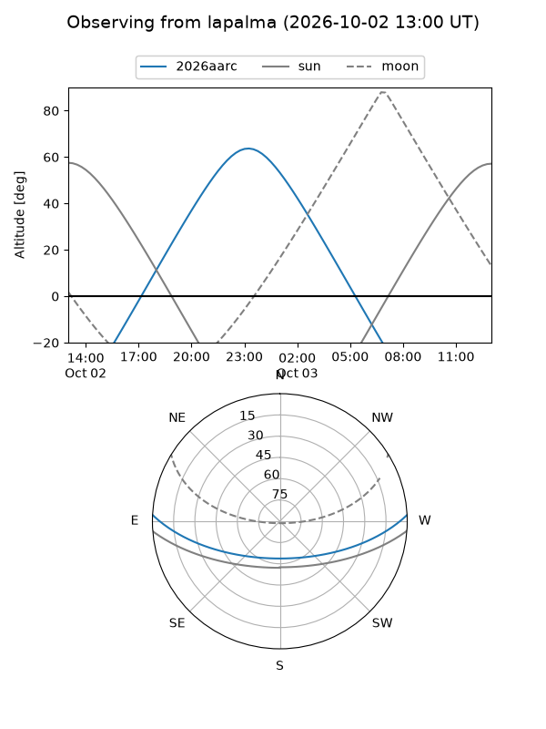
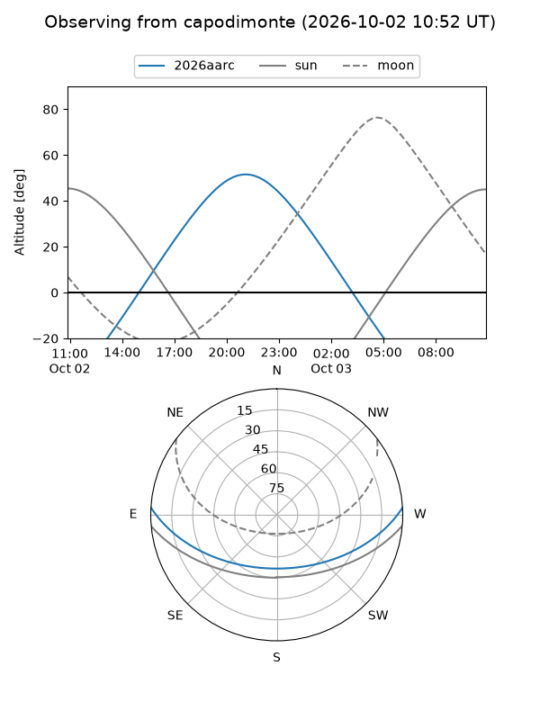
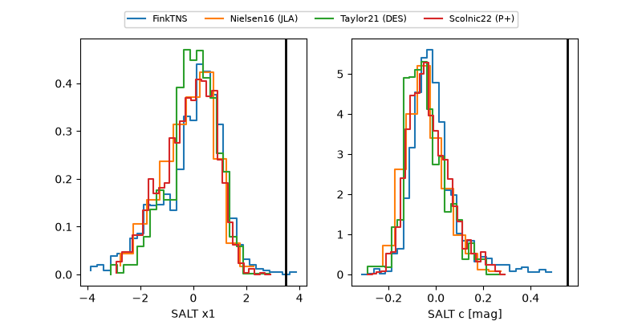

2026aarc
Target 2026aarc at 2026-10-02 16:28
Aliases and brokers:
FINK-ZTF: ztf.fink-portal.org/ZTF26abthdsu
Lasair-ZTF: lasair-ztf.lsst.ac.uk/objects/ZTF26abthdsu
ALeRCE-ZTF: alerce.online/object/ZTF26abthdsu
YSE-PZ: ziggy.ucolick.org/yse/transient_detail/2026aarc
TNS name: wis-tns.org/object/2026aarc
Direct TNS query: direct search
alt names
ZTF26abthdsu (ztf,fink_ztf)
2026aarc (tns,yse)
Coordinates:
equatorial (ra, dec) = 341.8015,+2.31518
equatorial (HMS+DMS) = 22:47:12.37,+02:18:54.66
galactic (l, b) = (72.5191,-48.01862)
Flags:
TNS type: nan
peak dt: +14.2
Photometry:
last ztfg=20.46, ztfr=19.77
5 ztfg, 6 ztfr detections
Lightcurve

Visibility



Additional plots
